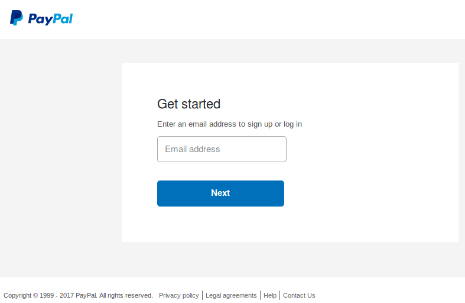
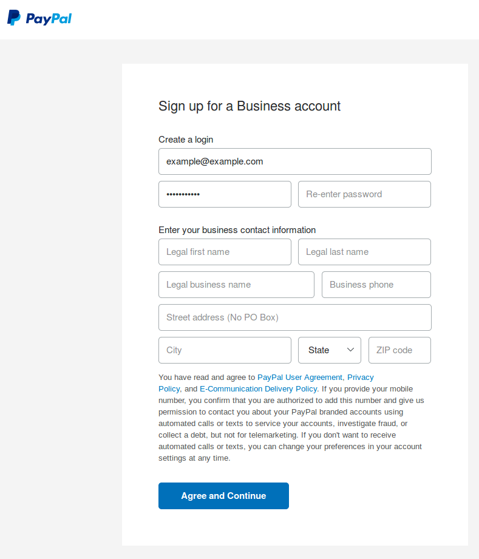
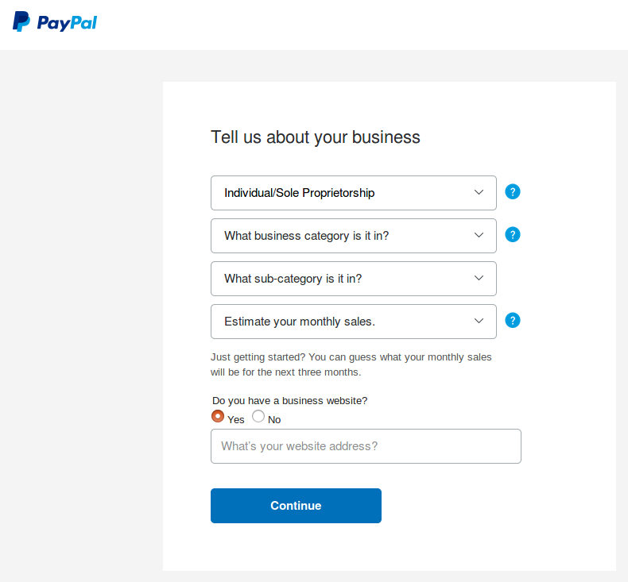
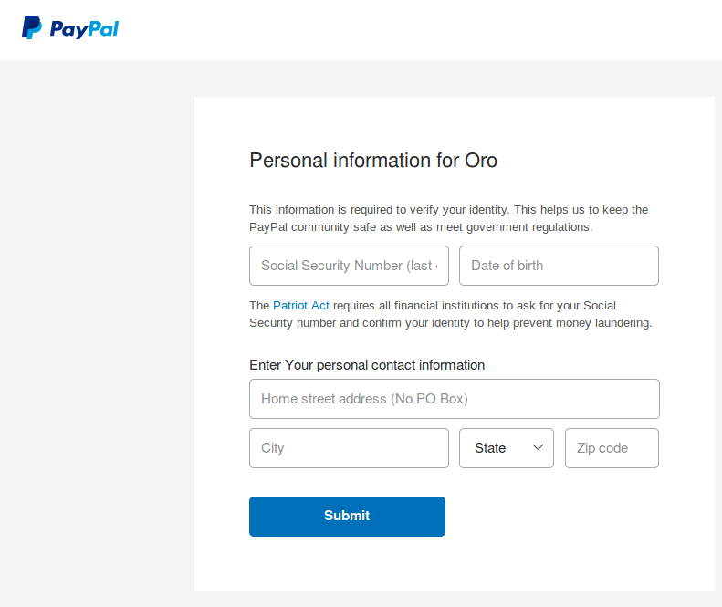
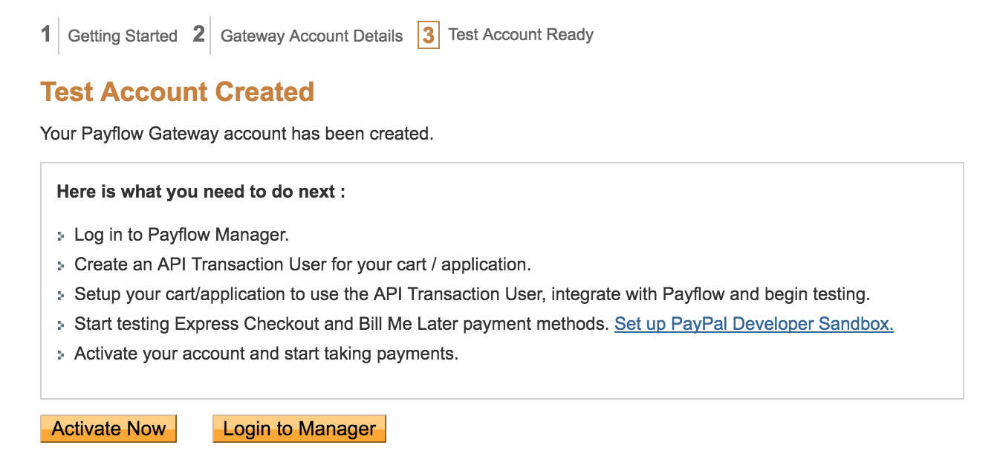
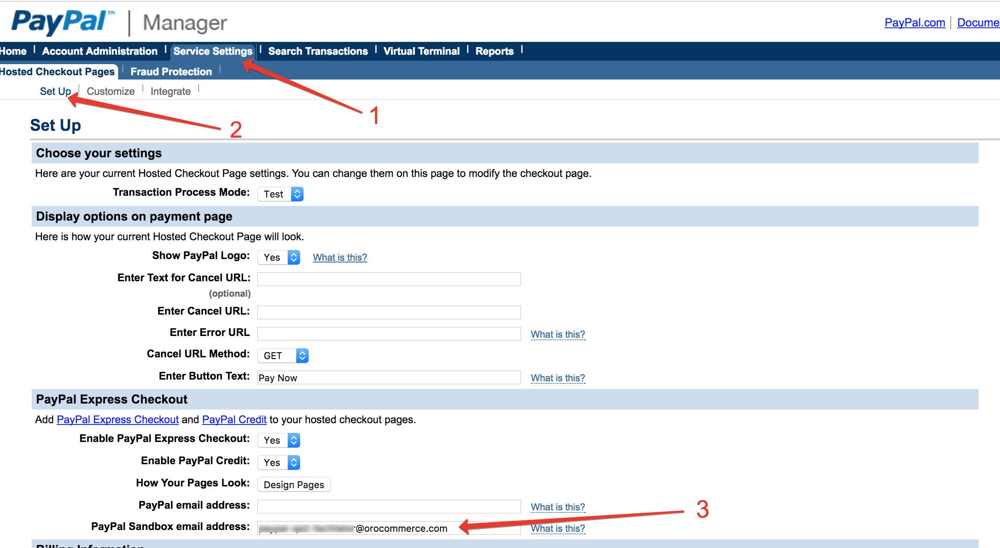

Before adding a PayPal Payflow Gateway as a payment method in OroCommerce, create a PayPal Payflow Gateway Manager Account and create a dedicated API transaction user for every instance of OroCommerce. You might need a separate instance for a sandbox, test, staging/pre-production, and production environment.
To register business account and enable express checkout for your OroCommerce PayPal integration, follow the next steps:
Open https://developer.paypal.com/ and click Log In.
On the login page that opens, click Sign Up.
On the following page, select Business Account and click Continue.
Select the service plan (Payment Pro, Payments Standard, or Express Checkout).
The Get Started page opens.
Type in your email.
The Sign up for a Business account page opens.
Enter the password and password confirmation.
Provide your business contact information.
Read the PayPal User Agreement.
Click Agree and Continue.
On the following page, select your type of business and provide the requested additional information.
Provide the requested personal information.
Click Submit.
The PayPal Business Account opens.
In Account Setup, confirm your email, link your bank account, and configure the credit card statement.
Test sandbox PayPal account is identical to the regular PayPal account but is hosted in the sandbox environment.
To create a sandbox test account, follow the next steps:
To create a PayPal Payflow Gateway Account:
Open https://registration.paypal.com/ and click Continue.
Select your payment processor from the list.
Fill in the required fields in the Account Information section, confirm you have read the PayPal Gateway Agreement in the Term and Conditions section, and click Continue.
Follow the on-screen guidance to prepare for integration: login to the Payflow Manager and create one or more API Transaction User(s).
To test the Express Checkout and Bill Me Later payment methods, click Set up PayPal Developer Sandbox link and enter PayPal Sandbox Email address.
Note
If you do not have a PayPal Sandbox account yet, register at http://developer.paypal.com.
Now you have Payflow Gateway Account and you can use PayPal Payments Pro and Payflow Gateway in your applications.
To accept payments in OroCommerce, you need to configure your PayPal Manager Account using the following steps:
OroCommerce requires enabling secure token and silent post features.
To enable these features:
Log into the https://manager.paypal.com/:
Navigate to the Service Settings and click the Set Up link in the Hosted Checkout Pages group.
In the Security Options section, set Enable Secure Token to Yes.
In the Silent Post for Data Transfer section, set Use Silent Post to Yes and enable the Void transaction when my server fails to receive data sent by the silent post.
OroCommerce depends on the reference transactions. To ensure they are enabled:
Note
There might be a significant delay before this change comes into affect (up to several hours). During this time your reference transactions could be rejected by PayPal.
Disable Fraud Protection for the Test Setup to avoid your test transaction being blocked. Test transactions may look suspicions due to unusual behaviour and eventual failures because of the invalid data:
Note
There might be a significant delay before this change comes into affect (up to several hours). During this time your transactions may be caught by the fraud filter which will lead to the payment failure.
Enable Fraud Protection for any customer facing environments where real purchases might happen:
Note
There might be a significant delay before this change comes into affect (up to several hours). During this time the fraud filter is disabled and any transactions may impose a security risk due to the reduced protection. Limit access to the Front Store and disable related payment methods until you confirm that the fraud filters are on and catch the suspicious and illegal transactions.
Using Express Checkout requires the following configuration in the Manager Account.
Log into the https://manager.paypal.com/ as described in the Enable Secure Token and Silent Post section.
Navigate to the Service Settings > Hosted Checkout Pages > Set Up.
In the PayPal Express Checkout section, set Enable PayPal Express Checkout and Enable PayPal Credit to Yes, enter PayPal email address for production deployments and PayPal sandbox email address for sandbox and test deployments. Use the business account email (as in Register a Business Account with PayPal).
Save changes.
Now you can configure Express Checkout as a payment option in OroCommerce.
To create an API Transaction User:
The basic user login information is securely delivered to the provided email.